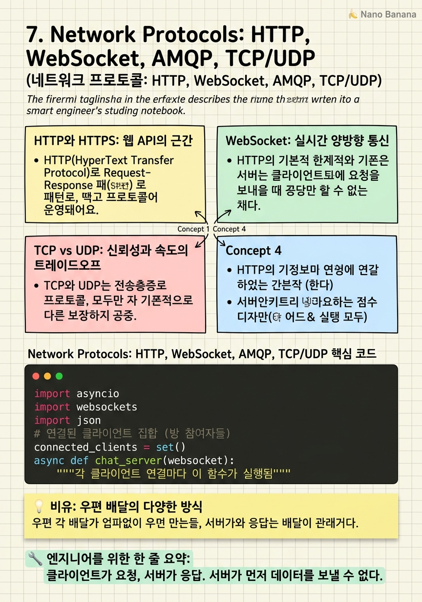

Network Protocols: HTTP, WebSocket, AMQP, TCP/UDP

🎯 학습 목표
- HTTP 요청/응답 사이클과 주요 헤더를 설명할 수 있다
- HTTPS에서 TLS/SSL이 어떻게 데이터를 보호하는지 이해한다
- WebSocket이 HTTP 폴링보다 나은 이유를 설명할 수 있다
- TCP의 3-way handshake와 신뢰성 보장 메커니즘을 이해한다
- TCP와 UDP를 사용 사례에 맞게 선택할 수 있다
API를 설계할 때는 어떤 프로토콜을 사용할지도 결정해야 한다. 프로토콜 선택은 API의 성능, 실시간 능력, 신뢰성에 직접 영향을 미친다. HTTP는 대부분의 경우 기본 선택이지만, 실시간 채팅에는 WebSocket이, 마이크로서비스 간 통신에는 gRPC가, 비동기 처리에는 AMQP가 더 적합하다.
OSI 7계층 모델에서 HTTP, WebSocket, gRPC는 애플리케이션 계층(Layer 7)에 위치하고, TCP와 UDP는 전송 계층(Layer 4)에 위치한다. 상위 프로토콜은 하위 프로토콜 위에 구축된다 — HTTP는 TCP 위에서, UDP는 DNS와 게임 프로토콜에서 사용된다.
API를 만들 때 '이 데이터 교환이 실시간인가, 배치인가?', '신뢰성이 필요한가, 속도가 더 중요한가?', '브라우저 지원이 필요한가?'를 먼저 물어봐야 한다. 이 답에 따라 프로토콜 선택이 달라진다.
핵심 내용
HTTP와 HTTPS: 웹 API의 근간
HTTP(HyperText Transfer Protocol)는 요청-응답(Request-Response) 패턴으로 동작한다. 클라이언트가 요청을 보내면 서버가 응답을 돌려보낸다. 연결이 종료된다. 다음 요청은 새로운 연결을 만든다.
HTTP 요청의 구성 요소: 메서드(GET, POST, PUT, DELETE), URL (리소스 주소), 헤더(Authorization, Content-Type, Cache-Control 등), 바디(POST/PUT 시 페이로드).
HTTP 상태 코드는 의미있게 사용해야 한다:
- 200 OK — 성공
- 201 Created — 리소스 생성 성공
- 400 Bad Request — 클라이언트 에러 (잘못된 요청)
- 401 Unauthorized — 인증 없음
- 404 Not Found — 리소스 없음
- 500 Internal Server Error — 서버 에러
HTTPS = HTTP + TLS/SSL 암호화. 클라이언트와 서버 사이의 데이터가 암호화되어 중간에서 도청해도 내용을 알 수 없다. 현대 웹 서비스에서 HTTPS는 선택이 아니라 표준이다 — 구글은 HTTPS가 아닌 사이트를 SEO에서 불이익을 준다.
WebSocket: 실시간 양방향 통신
HTTP의 근본적 한계는 클라이언트가 요청을 보내야만 서버가 응답할 수 있다는 것이다. 채팅 앱에서 새 메시지가 오면 서버가 클라이언트에게 먼저 알려줘야 하는데, HTTP로는 불가능하다.
HTTP 폴링(Polling) = 클라이언트가 5초마다 '새 메시지 있어요?' 요청을 보낸다. 새 메시지가 없어도 요청을 보낸다. 불필요한 요청으로 서버와 네트워크 리소스를 낭비한다. 레이턴시도 최대 5초다.
WebSocket = 첫 HTTP 요청으로 핸드셰이크(Upgrade 헤더)를 한 후, 클라이언트-서버 간 영속적 양방향 연결을 유지한다. 이후 서버는 클라이언트의 요청 없이도 데이터를 푸시할 수 있다. 새 메시지가 오는 즉시 클라이언트에게 전달된다.
| 비교 | HTTP 폴링 | WebSocket | |---|---|---| | 연결 방식 | 요청마다 새 연결 | 영속적 연결 유지 | | 서버 → 클라이언트 | 불가 (클라이언트 요청 필요) | 가능 (Push) | | 레이턴시 | 폴링 주기에 의존 | 밀리초 이하 | | 오버헤드 | HTTP 헤더 매번 | 핸드셰이크 1회 후 없음 | | 사용 사례 | 단순 API | 채팅, 라이브 스코어, 주식 시세 |
TCP vs UDP: 신뢰성과 속도의 트레이드오프
TCP와 UDP는 모두 전송 계층 프로토콜이지만 근본적으로 다른 보장을 제공한다.
TCP(Transmission Control Protocol) = 신뢰할 수 있는 데이터 전달을 보장한다. 데이터 패킷이 분실되면 재전송한다. 패킷 순서가 뒤바뀌면 올바른 순서로 재정렬한다. 이를 위해 3-way handshake (SYN → SYN-ACK → ACK)로 연결을 설정한다. HTTP, HTTPS, WebSocket은 모두 TCP 위에서 동작한다. 결제, 인증, 파일 전송처럼 데이터가 정확하게 도달해야 할 때 사용한다.
UDP(User Datagram Protocol) = '보내고 잊어버린다(Fire and Forget)'. 패킷이 분실돼도 재전송하지 않는다. 순서도 보장하지 않는다. 그 대신 오버헤드가 거의 없어서 매우 빠르다. 영상 통화에서 0.5초 전 영상 프레임이 분실됐다면, 그것을 기다리는 것보다 현재 프레임을 빠르게 보여주는 것이 더 좋다. DNS 쿼리, 온라인 게임, 라이브 스트리밍에서 사용한다.
AMQP(Advanced Message Queuing Protocol) = 메시지 큐를 위한 프로토콜. 프로듀서(Producer)가 메시지를 메시지 브로커(RabbitMQ, ActiveMQ)에 발행하면, 컨슈머(Consumer)가 처리할 수 있을 때 가져간다. 비동기 처리, 서비스 간 디커플링에 사용된다. '주문 완료 시 이메일 발송'처럼 즉각적 처리가 필요 없는 작업에 적합하다.
💡 비유로 이해하기
HTTP는 일반 편지다. 편지(요청)를 보내면 답장(응답)이 온다. 한 번의 교환이 끝나면 완료된다. HTTPS는 봉인된 편지 — 중간에 누가 열어도 내용을 읽을 수 없다.
WebSocket은 전화 통화다. 한 번 연결되면 서로 자유롭게 얘기할 수 있다. 상대방이 먼저 말을 걸 수 있다. HTTP 폴링은 5분마다 '통화 가능?'이라는 문자를 보내는 것과 같다 — 비효율적이다.
TCP는 등기우편이다. 수신 확인이 있고, 분실 시 재발송한다. 정확성이 중요하다. UDP는 전단지 배포다. 100장을 뿌리면 몇 장은 길에 날아가지만, 대부분은 전달된다. 정확성보다 속도와 규모가 중요한 상황에 사용한다.
💻 코드 예시
WebSocket으로 간단한 실시간 채팅 서버를 구현해 보자. HTTP 폴링과 비교하면 코드 구조 자체가 근본적으로 다르다는 것을 알 수 있다.
import asyncio
import websockets
import json
# 연결된 클라이언트 집합 (방 참여자들)
connected_clients = set()
async def chat_server(websocket):
"""각 클라이언트 연결마다 이 함수가 실행됨"""
connected_clients.add(websocket)
print(f"새 연결: 현재 {len(connected_clients)}명")
try:
# 클라이언트가 보내는 메시지를 비동기로 대기
async for message in websocket:
data = json.loads(message)
broadcast_msg = json.dumps({
'user': data['user'],
'text': data['text'],
'type': 'message'
})
# 모든 연결된 클라이언트에게 브로드캐스트 (서버 → 클라이언트 Push!)
await asyncio.gather(*[
client.send(broadcast_msg)
for client in connected_clients
])
except websockets.ConnectionClosed:
pass # 연결 종료는 정상
finally:
connected_clients.remove(websocket)
print(f"연결 종료: 현재 {len(connected_clients)}명")
async def main():
# 8765 포트에서 WebSocket 서버 시작
async with websockets.serve(chat_server, 'localhost', 8765):
print("WebSocket 채팅 서버 시작 (ws://localhost:8765)")
await asyncio.Future() # 영원히 실행
asyncio.run(main())async for message in websocket는 클라이언트가 메시지를 보낼 때까지 비동기로 대기한다 — HTTP와 달리 연결이 유지된다. asyncio.gather(*[...])는 모든 연결된 클라이언트에게 동시에 메시지를 브로드캐스트한다. 이것이 WebSocket의 핵심 — 서버가 클라이언트의 요청 없이 먼저 데이터를 Push할 수 있다. HTTP 폴링으로는 이 실시간 브로드캐스트를 효율적으로 구현할 수 없다.
🏭 현업에서의 평가
✅ 시니어가 보는 것
- 실시간 요구사항이 있는지 파악하고 WebSocket을 제안하는가
- TCP vs UDP를 서비스 특성에 맞게 선택하는가
- AMQP/메시지 큐로 서비스 간 비동기 처리를 분리하는가
- HTTP/2 vs HTTP/1.1의 차이를 아는가 (멀티플렉싱)
⚠️ 레드 플래그
- 모든 실시간 요구에 HTTP 폴링 제안
- UDP를 결제나 인증에 사용 제안
- WebSocket과 Server-Sent Events(SSE)의 차이를 모름
- HTTP/2가 gRPC의 기반임을 모름
🎤 예상 인터뷰 질문
- 주식 시세를 100만 명에게 실시간으로 푸시하는 시스템을 설계하세요. 어떤 프로토콜을 사용하겠습니까?
- 마이크로서비스 A가 B의 작업 완료를 기다려야 할 때 WebSocket과 메시지 큐 중 어떤 것을 선택하겠습니까?
- 온라인 게임에서 플레이어 위치를 1초에 60번 전송해야 합니다. TCP와 UDP 중 어떤 것을 쓰겠습니까? 왜?
✨ 핵심 요약
HTTP = 요청-응답
클라이언트가 요청, 서버가 응답. 서버가 먼저 데이터를 보낼 수 없다.
HTTPS 필수
TLS/SSL 암호화로 데이터를 보호. 현대 웹에서 선택이 아닌 표준.
WebSocket = 실시간 양방향
핸드셰이크 후 영속적 연결. 서버가 클라이언트에게 먼저 Push 가능. 채팅, 알림에 필수.
TCP = 신뢰성
재전송, 순서 보장, 3-way handshake. 결제, 인증, 파일 전송에 사용.
UDP = 속도
패킷 손실 허용, 오버헤드 없음. 영상 통화, 게임, 라이브 스트리밍.
AMQP = 비동기 분리
메시지 큐로 프로듀서-컨슈머 디커플링. 이메일 발송, 배치 처리, 서비스 간 통신.
gRPC = HTTP/2 기반
Protocol Buffers + HTTP/2. 마이크로서비스 내부 통신에서 JSON/REST보다 10배 빠를 수 있음.